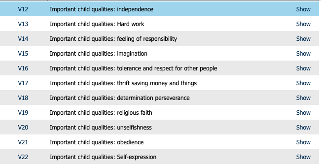
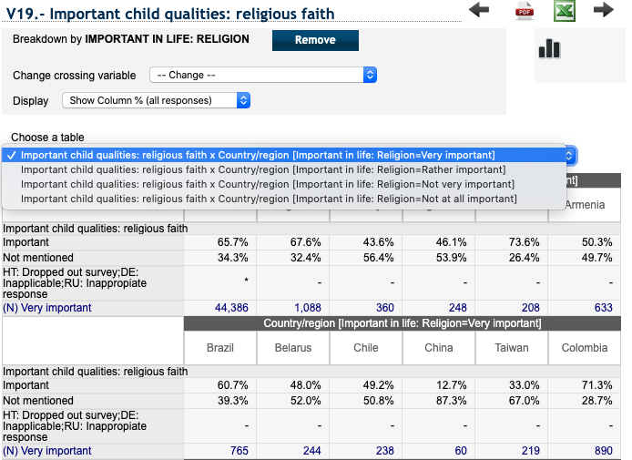
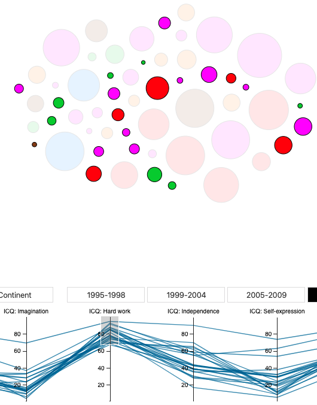

What does ICQ stand for? Important Child Quality.
What does IIL stand for? Important in Life.
What does the color of the bubble indicate? Continent.
What does the bubble radius indicate? GDP per capita.
What is the difference of “Cluster” and “Continent”? Cluster just create a random cluster of all countries, continents create a cluster of countries per continent.
Can I filter data? Yes, use the parallel coordinates to filter ICQ and IIL variables. To filter on GDP you have to click on the bubbles.
Why can I move the bubbles? Because it is fun.
Why cant I always click on a country? It is the force animation that needs to render before you click it.
Why does some countries get stuck when I categorize on Continent? Becuase force simulation is based on radius, you can help them out by draging them with your mouse!
I am amazed by the extent of which the World Values Survey (WVS) organization have gathered data for the last four decades. When going through the available data I found some interesting variables that I wanted to dig deeper into, important child qualities (ICQ).
The ICQ variables is a measure of how important a certain quality is for a child to have. I began to search for relationships between ICQ variables and other variables such as important in life (IIL) variables. One example is the picture below which show how countries value childrens faith and cross it with how countries value religion overall.
Many problems arose during this discovery process, it was very hard to get an understanding of the data in the format that it was displayed. Also variables where grouped as either important or not important, some were grouped in more detailed categories such as very-, rather-, not very-, not at all- important. To get a deeper understanding of what child qualities countries value I decided to aggregate data from both WVS and Gapminder. In order to understand the data I decided to create an interactive tool.
To gain a deeper understanding of what qualities countries value in their children and what might affect those values I decided to create my own tool and aggregate data which I thought to have interesting relationships. Questions that I was interested in was how Important Child Qualities (ICQ) variables was related to Important In Life (IIL) varibles, are there any double standards? Does geographical location matter? How does GDP per capita affect ICQ variables? And does the importance of these values change over time?
I had a thesis that countries that value hard working children would have a lower GDP per capita since everyone in the family have to help. In richer countries this type of quality is not as important. Looking at the picture above we can see that there might be something to that thesis, it is ofcourse important to remember that it might not be the case since there can be more important factors that affect this variable. There are many interesting findings one can do with this tool, see for yourself!
The result is a tool that visualize Important Child Qualities-, Important In Life, GDP per capita-, Geographic location- variables all at once. It display all countries available from the World Values Survey organization between the years 1995-2014. The total amount of variables displayed are 16, the data is gathered from World Values Survey organization and Gapminder.
At first I was thinking of a map to display all countries, but I later realized that it is not very meaningful to get the exact location of the country, or its boundaries. Displaying countries as bubbles gave me the opportunity to use the radius as an additional dimension while keeping some geographical information by grouping bubbles by continent.
Currently the color of the bubble show the continent, this information is a bit unnecessary since the possibility to group by continent is available. What I would like to do is to change meaning of the color so that it reflects to the official religion of the country. It would be interesting to see how that affect ICQ variables.